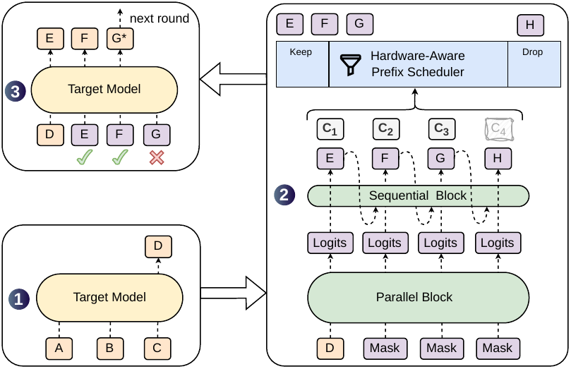
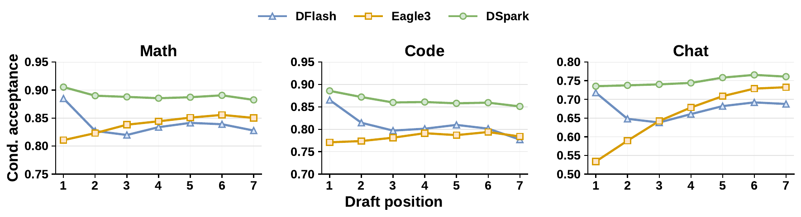
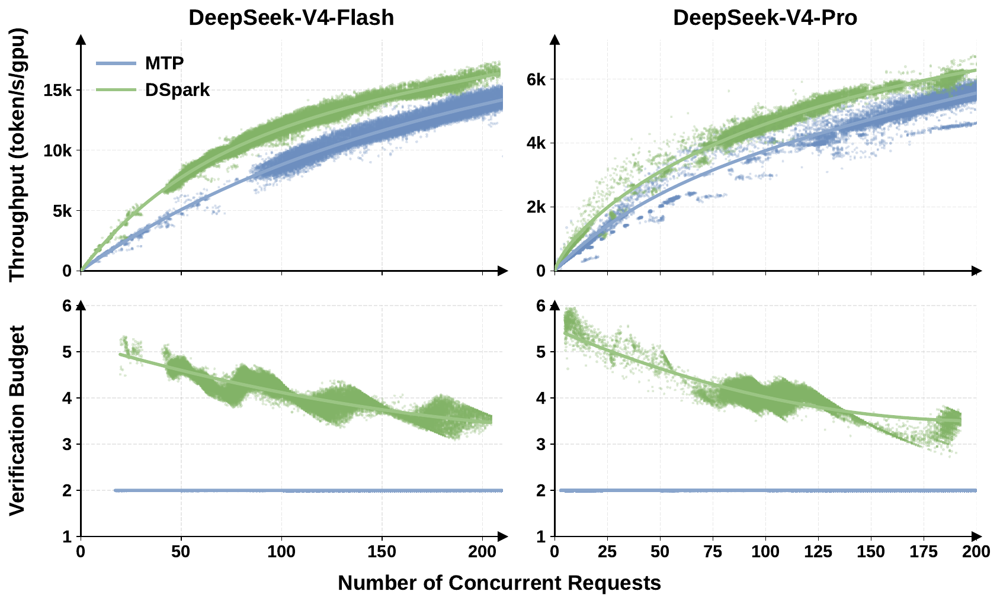

DSpark: Confidence-Scheduled Speculative Decoding with Semi-Autoregressive Generation
DSpark通过半自回归架构和自适应验证提升推测解码吞吐。
机制速览
问题推测解码通过将草稿生成与目标验证解耦来加速LLM推理。方法默认的顺序头为Markov-head；还研究了RNN-head变体。实验离线评估使用四个目标模型：Qwen3‑4B、Qwen3‑8B、Qwen3‑14B和Gemma4‑12B。背景知识速读
大型语言模型逐 token 生成文本，对于长输出可能很慢。推测解码通过让一个快速的小型草稿模型一次建议多个 token，然后完整的目标模型一次性检查它们来加速。并行草稿模型在单步中生成许多 token，使其极快，但它们面临两个问题：首先，由于每个 token 独立猜测，后续 token 经常不符合上下文而被拒绝；其次，在高负载下试图验证所有提议的 token 会浪费本可用于其他请求的计算能力。
核心判断
DSpark 框架通过（1）为并行草稿模型附加一个微小的顺序调整模块，使后续 token 能看到之前的选择；（2）添加一个置信度预测器，结合系统负载信息，决定哪些提议的 token 值得发送给目标模型，从而同时解决这两个问题。
问题与动机
当并行草稿模型提议一个块时，每个位置仅基于原始提示预测。想象提示以“thank”结尾。草稿模型可能同时提议“you”、“so”、“much”，但位置 2 无法知道位置 1 选择了“you”还是“very”，导致不一致的组合如“you so much”。结果，token 接受率在前几个位置后急剧下降。此外，在高服务器负载下，目标模型的时间很宝贵：验证一个可能被拒绝的 token 浪费了服务其他用户请求的机会。因此，好的解码器应将更多验证预算分配给早期高置信度的 token，减少对衰减尾部的投入。
方法与机制
DSpark 分三个阶段工作。首先，草稿阶段：给定最后目标生成的 token（锚点），并行主干（类似 DFlash）一次性计算所有 γ 位置的隐藏状态。然后轻量级顺序模块——默认是 Markov-head，它将每个位置条件于前一个位置采样的 token——调整这些 logits 以注入从左到右的依赖，产生细化的草稿 token 和置信度分数。置信度头被训练来预测前缀在该位置通过验证的概率。接下来是调度：硬件感知调度器查看置信度分数和预先测量的引擎吞吐量特征（在当前负载下额外 token 的成本），并仅保留预期收益超过成本的最长前缀。此前缀发送给目标模型。最后，目标模型通过拒绝采样在单次前向传播中验证前缀；它接受最长的匹配前缀并附加一个奖励 token。循环重复。
实验解读
作者在四个目标模型（Qwen3‑4B/8B/14B 和 Gemma4‑12B）上，针对数学、代码和聊天基准离线测试了草稿质量，将 DSpark 与 Eagle3（自回归）和 DFlash（并行）进行比较。DSpark 持续达到更长的每轮接受长度——比基线改进 16‑30%。在结构化任务上增益最大。逐位置分析显示，DFlash 在关键的首个 token 上已经击败 Eagle3，因为并行架构允许更深的草稿网络，但后续位置接受率衰减；DSpark 的顺序头在很大程度上恢复了损失。在线部署使用 DeepSeek‑V4 引擎，以真实流量基线（MTP‑1，单 token 草稿模型）进行对比。在启用置信度调度的情况下，DSpark 在相等吞吐量下提供 60‑85% 的每用户生成加速，并在中等服务水平下将总吞吐量提高 51%。在非常高的交互性目标下，DSpark 能够在单 token 基线无法跟上时运行，从而扩展了可行性能边界。
相关工作
早期的推测草稿模型包括自回归的 Eagle3（每块成本 O(γ)）和完全并行的 DFlash（成本 O(1) 但失去 token 间建模）。Medusa、P‑EAGLE 和 DART 等系统也探索并行草稿。对于调度，许多方法使用固定扩展或置信度启发式；DSpark 的贡献是将置信度直接与硬件感知效用模型联系起来，使决策负载自适应。同期工作 Domino 提出了类似于 DSpark 顺序头的 CausalEncoder，DFlare 也解决了条件化瓶颈，表明半自回归思路正在独立探索中。
局限与未来工作
主要的实际限制是，即使调度器后来丢弃了大部分块，并行主干也必须始终生成完整块——这在非常难的提示上会带来开销。作者提到了提前退出的未来工作以避免此问题。一个更微妙的限制是，在线比较是针对单 token 草稿模型（MTP‑1），而非同块大小的静态多 token 草稿模型。因此，报告的速度提升混淆了使用更多草稿 token 的收益和调度器的收益；论文没有通过关闭调度器的在线变体来区分它们。离线测试也禁用了调度器，因此其直接对接受长度的影响未展示。
通俗例子
想象一位厨师（目标模型）可以一次性品尝并纠正一组配料建议。一位快速但粗心的助手（并行草稿模型）大声喊出一整份配料清单，而不参考之前的配料，导致奇怪的组合如“盐‑巧克力‑大蒜”。DSpark 的助手仍然快速喊出，但学会了在命名下一个之前快速扫一眼上一个，所以它说“盐‑胡椒‑黄油”，基本正确。另一位助手（置信度头）还低声说出每个配料的置信等级。厨师看到满桌订单（高负载），只检查置信度保持高的部分；可疑的跳过。这节省了厨师在可能被拒绝的配料上浪费时间。
读者 takeaway
DSpark 是一个实用的系统，它结合了快速的半自回归草稿模型和负载感知调度器，以改善推测解码中的生成质量和吞吐量。在受控基准测试中，它相对于现有草稿模型显示出明显优势，并在生产环境中胜过弱的单 token 基线。然而，其全部优势来自更长的块大小、更好的 token 间建模和自适应验证的混合，未来工作应分离这些组件以理解各自的贡献。

方法：DSpark采用置信度调度验证：置信度头估计每个位置的前缀存活概率，硬件感知调度器利用引擎特定的吞吐量配置文件动态设置每个请求的验证长度。

问题：由于并行草稿器独立预测每个位置，它们无法对块内的令牌间依赖进行建模，导致多模态冲突和后续位置的快速接受衰减。

方法：DSpark采用置信度调度验证：置信度头估计每个位置的前缀存活概率，硬件感知调度器利用引擎特定的吞吐量配置文件动态设置每个请求的验证长度。
关键证据
- 问题：推测解码通过将草稿生成与目标验证解耦来加速LLM推理。
- 问题：并行草稿器在单次前向传播中生成所有草稿位置，使得草稿延迟几乎与块大小无关。
- 问题：由于并行草稿器独立预测每个位置，它们无法对块内的令牌间依赖进行建模，导致多模态冲突和后续位置的快速接受衰减。
- 问题：不加区分地验证所有提议令牌会浪费批处理容量在高拒绝风险的令牌上，降低高并发服务系统的吞吐量。
- 问题：理想的验证长度因数据领域（结构化任务如代码的接受率高于开放式聊天）和系统负载（轻负载下额外验证几乎免费，重负载下浪费的验证成本高昂）而异。
- 方法：默认的顺序头为Markov-head；还研究了RNN-head变体。
- 方法：DSpark采用置信度调度验证：置信度头估计每个位置的前缀存活概率，硬件感知调度器利用引擎特定的吞吐量配置文件动态设置每个请求的验证长度。
- 实验：离线评估使用四个目标模型：Qwen3‑4B、Qwen3‑8B、Qwen3‑14B和Gemma4‑12B。